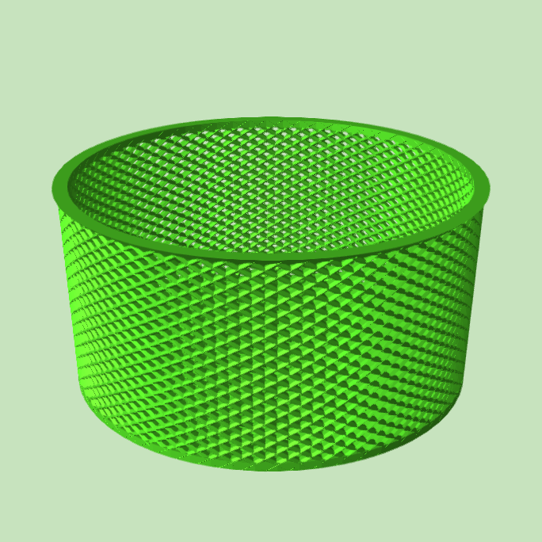
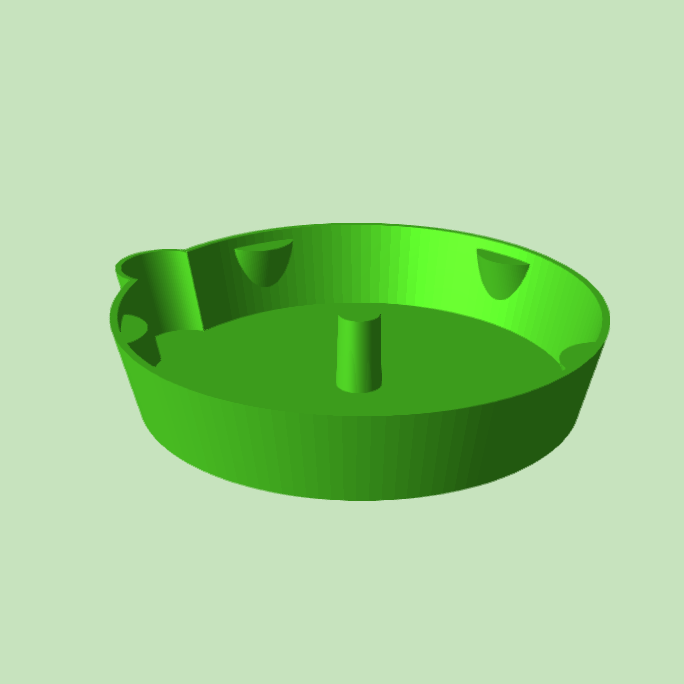

Air Pruning Self Watering Planter
This planter is designed along similar principles as the "Air-pot" product, although it uses a different mechanism. The standard version has an outer diameter of 108mm, intended to fit inside cut-down 2l coke bottles. With the addition of some cotton ribbon hanging to a resevoir it can keep your soil moist, something I found quite challenging with normal Air-pots as they'd dry the soil out quickly.
I find this combination of air-pruning and self watering works very well.
If you're not familier with air-pruning basically plants, especially trees, can grow really long inefficient roots, especially when they're in a container as the roots will hit a wall and curve around. Air pruning systems are designed to make sure a root doesn't curve, instead it hits the wall, gets exposed to air, and the plant decides to branch the root a big higher up. This leads to very dense root networks composed of short roots, and means your plant will be a lot better at extracting resources from the soil (plant food is highly recomended). It also means that plants generally won't get sick from outgrowing their pot, their growth will just be stunted.
It's written in openscad so you can customize the sizes for your exact situation, although the standard is designed to fit into a cut down 2 litre pop bottle.


- large-bonsai-planter.stl
- planter.scad
- planter.stl
- plate_large-bonsai-planter.scad
- plate_large-bonsai-planter.stl
- gallery
{kind=link}
{kind=link}
I also have a version of this pot I've designed for bonsai trees, it's larger and since I can't put it in a pop bottle it comes with a water reservoir plate.
It's my hope that the air-pruning pot's root management will work well with bonsai, removing the need to manually trim their roots. It's as big as I could fit on the bed of my ultimaker clone, which is still maybe a bit small for bonsai.

